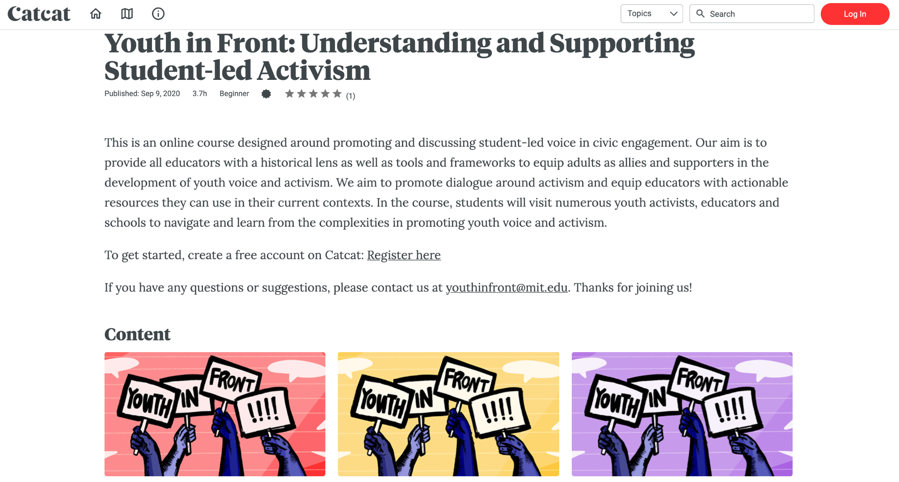

Youth in Front
About
"Youth-led civic activism can transform society for the better. Young people are powerful civic actors, and during their apprenticeship of citizenship, their voices deserve to be heard."
YouthInFront began as an online learning resource, created by civic educators and inspired by the rise in youth activism around the country. Stemming from a collaboration between Justin Reich from MIT, Meira Levinson from the Harvard Graduate School of Education (HGSE), and Freshcognate’s Founder Doug Pietrzak, this project benefited from the contributions of over 100 volunteers. Stemming from a collaboration between Justin Reich from MIT, Meira Levinson from the Harvard Graduate School of Education (HGSE), and Freshcognate’s Founder Doug Pietrzak, this project benefited from the contributions of over 100 volunteers. We curated a collection of resources from media producers, civic educators, youth activists and organizers, software engineers, and many organizations like the American Civil Liberties Union and Facing History and Ourselves. Our team sourced questions about activism from students and educators, interviewed over 30 activists and allies, produced a video series, and launched a website and social media campaign. In 2019, with additional support from Teaching Tolerance, the Youth In Front team produced an online course for educators, school and district leaders. Our goal is to help teachers fulfill the civic mission of schools by putting youth in front. Freshcognate developed the course, oversaw curriculum writing and development, and produced a series of video case studies highlighting youth activism around the US, and produced a series of studio lectures for learners.
Samples
-

- 